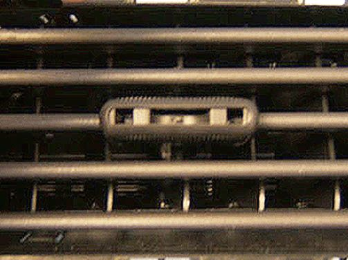
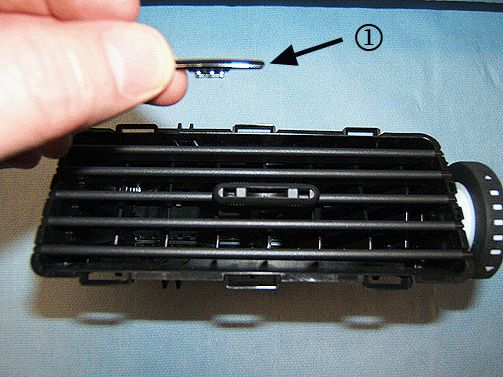
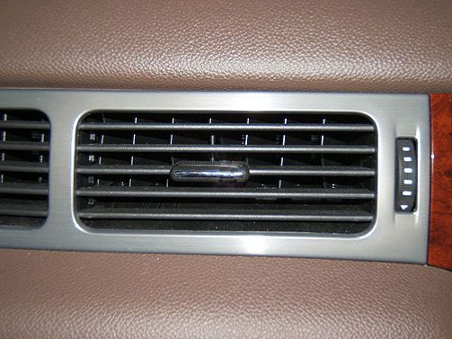

Interior, A/C - Air Vent Deflector Knob Missing/Loose
TECHNICALBulletin No.: 11-01-37-001
Date: May 13, 2011
Subject: Instrument Panel (IP) HVAC Air Outlet Deflector Knob Chrome Insert Loose/Missing (Install Updated Design Chrome Insert)
Models:
2007-2012 Cadillac Escalade, Escalade ESV, Escalade EXT
2007-2012 Chevrolet Avalanche, Silverado, Suburban, Tahoe
2007-2012 GMC Sierra, Sierra Denali, Yukon, Yukon XL, Yukon Denali, Yukon Denali XL
Condition

Some customers may comment on a loose/missing chrome insert from the center knob of one or more of the four IP HVAC air outlet deflectors. The area of the insert location is shown in the above graphic.
Cause
This condition may be caused by the original design of the chrome insert, which could allow the insert to become loose under certain conditions.
Correction

Note
It is not necessary to remove the air outlet deflector assembly from the IP. The graphic above shows the deflector removed for illustration purposes only.
The IP air outlet deflector knob chrome inserts (1) have been redesigned for better retention. Inspect all four of the IP air outlet deflector locations and replace any loose inserts.

Depending on trim level, order the appropriate insert service part from the part table below and install it to the raised center knob on the air outlet deflector(s). Align the insert and press into place.
Parts Information
Warranty Information
For vehicles repaired under warranty, use the table.

Disclaimer